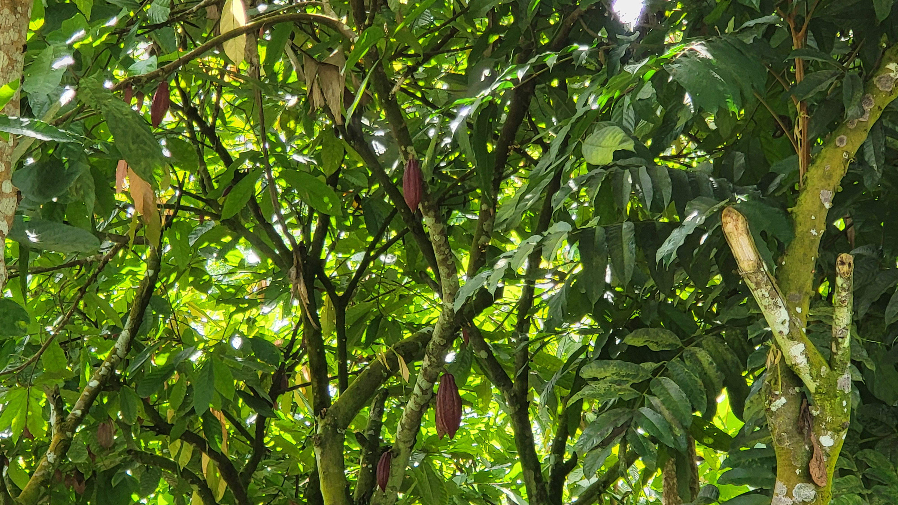
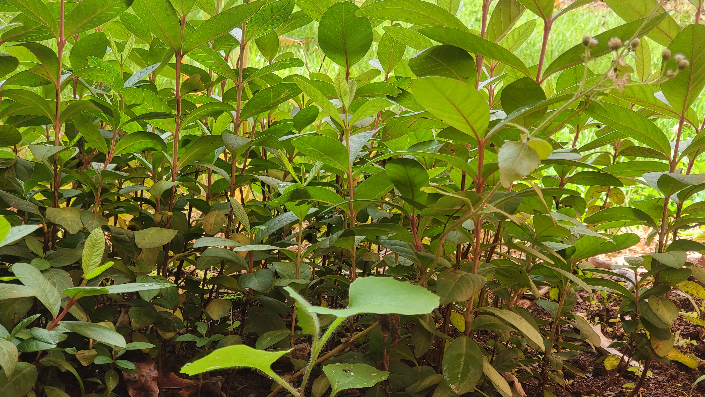
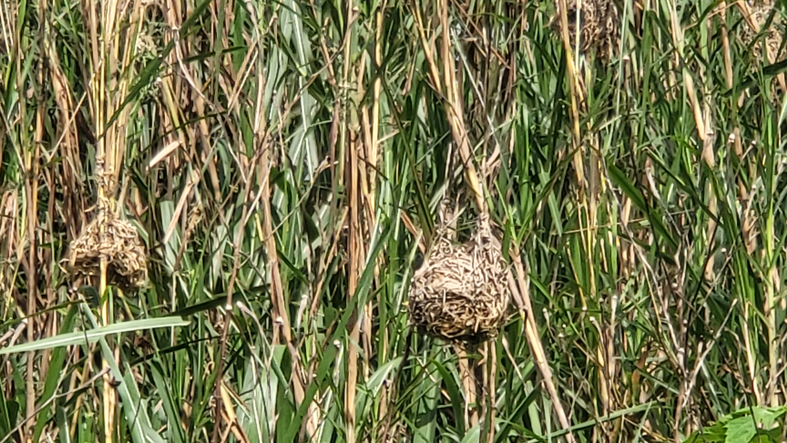
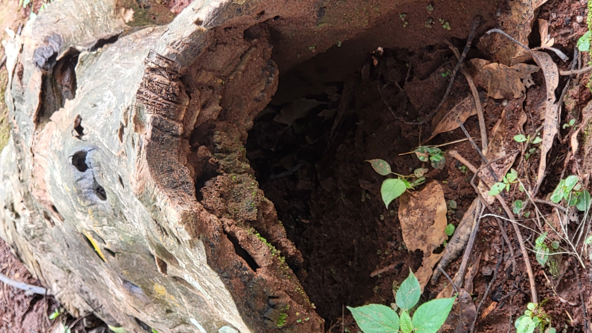

Nos Projets sur le Terrain
Des Actions Concrètes pour la Forêt et les Hommes
Chacun de nos projets répond à un besoin précis identifié avec les communautés locales. Ensemble, ils forment un écosystème d'interventions complémentaires qui transforment durablement les rapports entre les hommes et la nature au Cameroun.
Cacao Agroforestier sous Couvert Forestier
Le cacao est cultivé depuis des siècles sous l'ombrage des grandes forêts du Cameroun. Notre programme restaure cette pratique traditionnelle en l'associant aux connaissances modernes de l'agroforesterie pour créer des systèmes productifs qui préservent la biodiversité.
- Formation de 150 producteurs aux techniques du cacao sous ombrage
- Distribution de plants de cacao certifiés et d'arbres forestiers associés
- Amélioration de la qualité du cacao et des revenus des producteurs (+40%)
- Séquestration du carbone et maintien des corridors biologiques

Pépinières Forestières Communautaires
Au cœur de toutes nos activités se trouvent nos pépinières communautaires — des espaces de vie où naissent chaque année des dizaines de milliers de plants destinés à reverdir les collines et enrichir les exploitations agricoles du Cameroun.
- Production de 75 000 plants par an (espèces fruitières et forestières)
- 3 pépinières communautaires opérationnelles autour de Yaoundé
- Espèces produites : cacaoyer, manguier, papayer, goyavier, corossolier, palmier
- Formation des jeunes à la production de plants en sachet

Gestion Durable des Bassins Versants
L'eau est la vie. Nos projets de gestion des bassins versants protègent les sources, aménagent des canaux d'irrigation et restaurent les zones humides pour assurer une alimentation en eau fiable aux communautés agricoles tout au long de l'année.
- Aménagement de 12 km de canaux d'irrigation gravitaire
- Protection et reboisement des zones de captage
- Introduction de cultures adaptées aux zones humides (taro, macabo)
- Suivi de la qualité de l'eau dans les cours d'eau protégés

Documentation et Protection de la Biodiversité
Le Cameroun est l'un des pays les plus riches en biodiversité d'Afrique. BACOFAFL contribue à son inventaire et à sa protection par des suivis scientifiques réguliers qui permettent de mesurer l'impact de nos actions et d'alerter sur les espèces menacées.
- Plus de 180 espèces d'oiseaux, insectes et plantes documentées
- Suivi des nids d'oiseaux tisserins, indicateurs de la santé des écosystèmes
- Cartographie des habitats naturels dans les zones d'intervention
- Sensibilisation des communautés au rôle des espèces pollinisatrices

Sécurité Alimentaire et Cultures Vivrières
Manioc, maïs, banane plantain, igname — les cultures vivrières traditionnelles forment le socle alimentaire des familles camerounaises. Nos programmes renforcent leur production tout en améliorant les pratiques pour préserver la fertilité des sols.
- Accompagnement de 320 familles dans la gestion de leurs exploitations
- Techniques de conservation des semences et de gestion de la fertilité
- Association culturale intelligente : manioc + légumineuses + arbres fruitiers
- Transformation et conservation des récoltes pour réduire les pertes

Protection des Forêts Primaires et Secondaires
Les forêts primaires du Bassin du Congo sont irremplaçables. Notre programme de conservation travaille avec les villages riverains pour délimiter et protéger des zones forestières communautaires, créant ainsi des réserves de biodiversité gérées par les populations locales.
- Délimitation et protection de 1 200 hectares de forêts communautaires
- Lutte contre le braconnage et l'exploitation illégale du bois
- Restauration des forêts dégradées par des plantations d'espèces locales
- Mise en place de comités villageois de surveillance forestière
Comment Nous Travaillons
Une approche en quatre étapes qui garantit l'efficacité et la durabilité de chaque projet que nous engageons.
Diagnostic
Évaluation participative des besoins avec les communautés et inventaire des ressources naturelles disponibles.
Planification
Co-conception du projet avec les bénéficiaires, définition des objectifs mesurables et des indicateurs de suivi.
Mise en Œuvre
Déploiement sur le terrain avec formation, suivi régulier des équipes et ajustements en temps réel.
Évaluation
Mesure de l'impact environnemental et social, partage des résultats et capitalisation pour les projets futurs.

Soutenez un Projet
Contactez-nous pour découvrir comment vous pouvez contribuer à l'un de nos programmes — don, bénévolat, partenariat ou expertise technique.